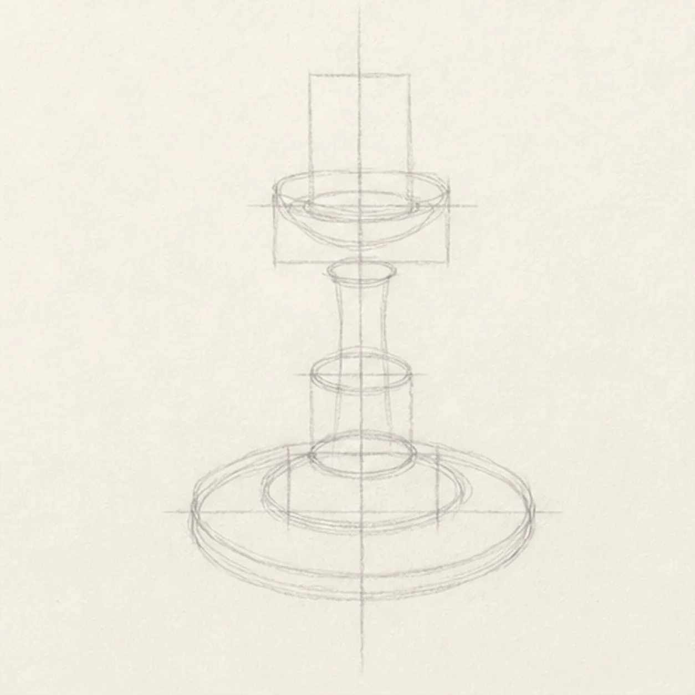
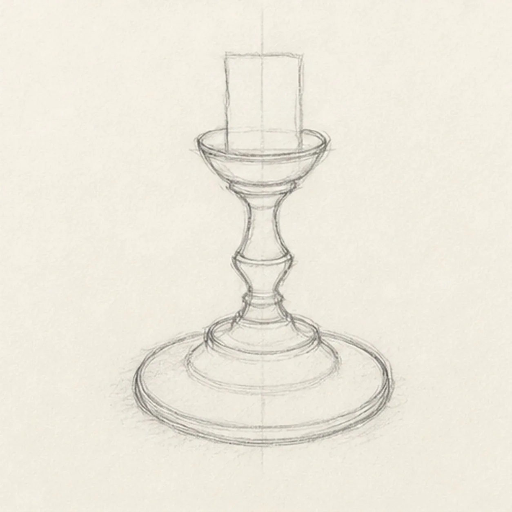
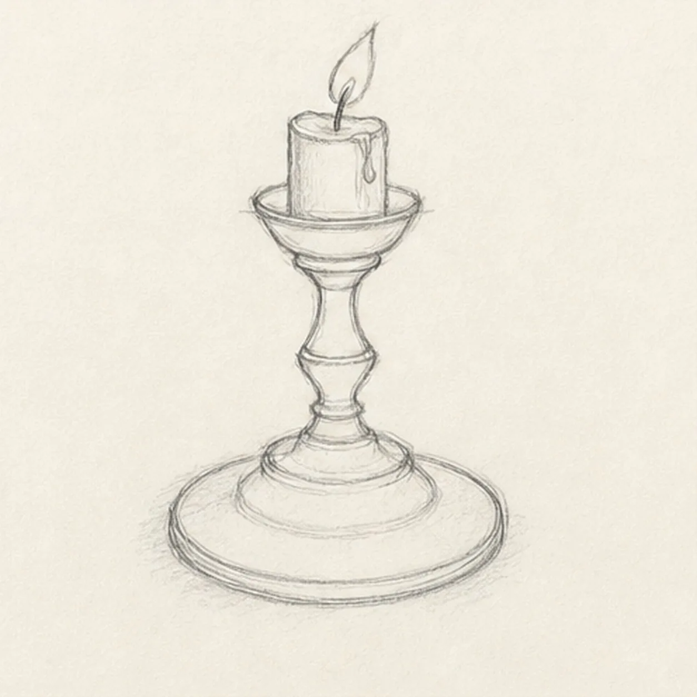
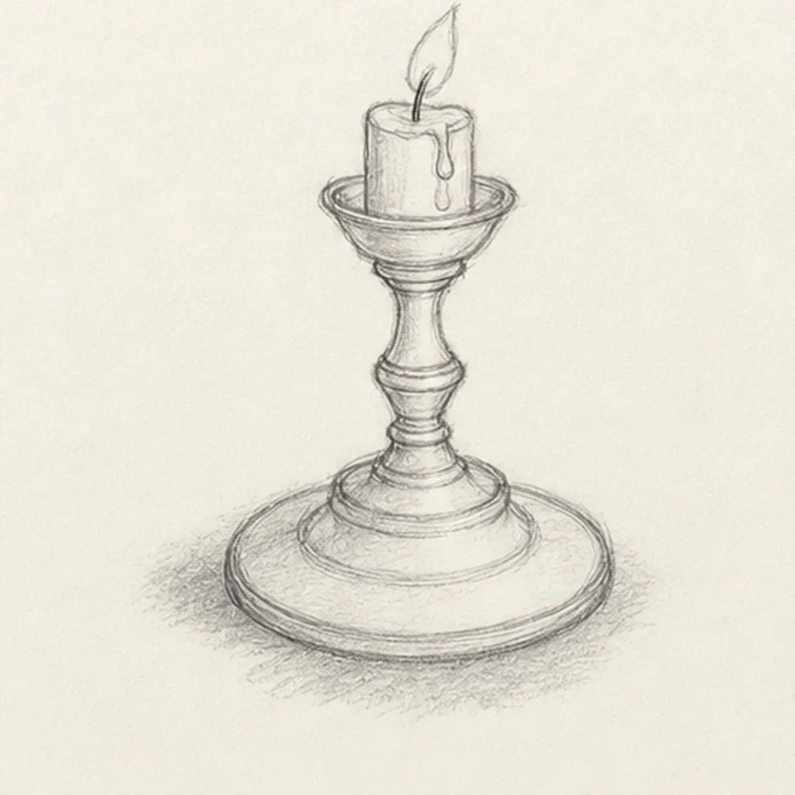
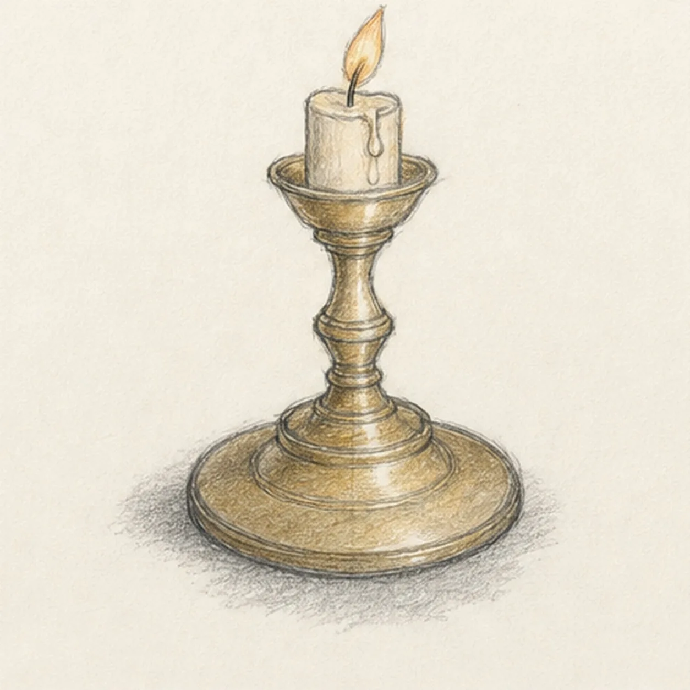

From the archive
Let's draw a brass candlestick with a candle
Treat this as one small practice round: build the subject lightly, notice the shapes, then darken only the lines that help the finished sketch.
-
01

Stack the ellipse guides
Draw one pale vertical axis, then align ellipse and box guides for the wide foot, stepped base, narrow stem, shallow candle cup, and short candle.
Sketch tip: Ghost each ellipse two or three times before touching down and keep the axis visible through every center. Reserve the candle footprint inside the cup so you do not finish a rim line that will be hidden.
-
02

Turn the brass silhouette
Connect the guides into one broad oval foot, stepped base, narrow turned stem, and shallow candle cup while preserving the pale candle guide.
Sketch tip: Compare the left and right negative spaces around the stem instead of measuring every curve. Let small asymmetries remain so the metal feels drawn by hand rather than mechanically mirrored.
-
03

Seat the candle and flame
Place one slightly irregular short candle inside the established cup, then add one dark wick and one small flame leaning gently to one side.
Sketch tip: Stop the cup rim at the candle edges and do not draw the hidden arc through the wax. Use one simple outer flame shape first; its inner value can wait for the color pass.
-
04

Add wax and turning bands
Refine the established contours, add exactly two modest wax drips, a few simple turning bands, and one broken graphite shadow beneath the foot.
Sketch tip: Wrap each brass band around the same ellipse family and curve the drips down the candle cylinder. Keep band spacing varied so the stem reads as turned metal, not a stack of identical rings.
-
05

Shade brass and candle
Layer graphite reflected values and restrained ochre across the candlestick, warm the existing candle and flame, preserve paper highlights, and deepen the established shadow.
Sketch tip: Shade vertical stem planes with lengthwise strokes and ellipse planes with curved strokes. Leave narrow paper gaps beside the darkest graphite bands to suggest brass shine without glossy rendering.
-
06

Polish the brass glow
Strengthen selected keeper edges, deepen the existing brass values and shadow, clarify highlights inside established forms, and soften only the pale guides that distract.
Sketch tip: Count one candlestick, one candle, two wax drips, one wick, and one flame, then check that every ellipse still shares the central axis. Your brass tone can be warmer or cooler while the same stacked construction stays useful.